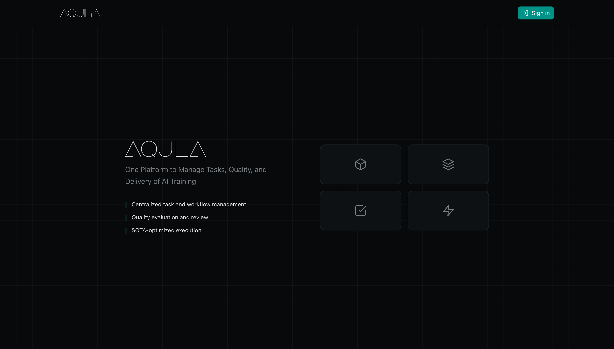

Years of cross-functional delivery
Addis Ababa · Open to tech PM roles
I turn complex work into clear delivery.
Dawit Feleke · Project Manager, Operator & Builder
Project manager with 4+ years delivering cross-functional programs across tech operations, education, sports, and media, from concept to close, on time and under pressure.
01 / Project manager
02 / Operator
03 / Builder

Scroll to explore
Portfolio / 2026
Employees supported at team peak
Students placed internationally
Repeat institutional clients
Youth athletes coordinated per event
01 / Selected work
Systems, programs and teams, made real.
A portfolio of direct delivery across internal tools, business operations, institutional partnerships, and media systems.

01
Aquila
Making operational work visible as the team scaled.
- Context
- Dataset collection operations and daily performance management at an AI training data company.
- Contribution
- Helped design and build an internal workflow monitoring tool, contributing to product design and codebase.
- Outcome
- Live project and employee performance visibility, tied to a team scaling to around 40 people without losing management control.
02
Headway
Building a profitable service business around reliable delivery.
- Context
- Concurrent student applications, visa processing, and preparation before departure across 3–6 month delivery windows.
- Approach
- Google Workspace KPI dashboards and Agile sprint planning for peak intake seasons.
- Outcome
- 100+ students placed, 20+ repeat institutional clients, profitable from year one, and a team scaled from one to seven.

200+ athletes / event
20 coaches
03
Programs that moved.
Aligning funders, partners, coaches and athletes around one delivery plan.
- Challenge
- Simultaneous partner expectations across branding, funding, event logistics, and youth program delivery.
- Approach
- Structured project tracking in Notion and Trello, rolling sprint cycles, and complete program design.
- Outcome
- Five institutional partnerships, full program funding, fully booked camps, and zero missed program deadlines.
04
From drops to a system.
Turning fast paced creative production into a dependable release cadence.
- Challenge
- Unplanned releases, rushed production, and repeated revision cycles.
- Approach
- Kanban workflows, release schedules, quality gates, approval paths, and content OKRs.
- Outcome
- A consistent release cadence, fewer revision cycles, and increased international streaming reach.


3-person creative team
Concurrent releases
Also built / 2026
Frame by Frame
Designed and deployed a full company website for a media production company, end to end from build through launch. Sustained an average of 40–80 visits per month after launch, with client feedback specifically praising ease of navigation and usability.

02 / Profile
I work where people, systems and pressure meet, bringing enough structure to move the work without losing the human side of delivery.
Project manager with 4+ years delivering cross-functional programs across tech operations, education, sports, and media, from concept to close, on time and under pressure. Most recently led data operations and internal tooling at an AI training data company, helping scale the team to around 40 employees by making daily management easier.
Also run an education consultancy as founder since 2021, and previously led institutional partnerships with NBA Africa and international embassies, plus a multicultural team of 8 across 6 nationalities in Poland with no shared native language.
Comfortable owning the full delivery chain: scope, budget, timeline, stakeholder alignment, and final execution. Fluent in Agile and Kanban environments. Native Amharic, C2 English.
Start with clarity
Translate ambiguous briefs into scope, owners, milestones, and a shared definition of done.
Make work visible
Build simple systems that surface progress, risk, and blockers early.
Align the room
Keep partners, teams, and decision makers moving toward the same outcome.
Own the last mile
Stay with the work through execution, handoff, and close.
Adapt without losing control
Use Agile and Kanban practices to respond to reality while protecting the outcome.
03 / Experience
A career built through ownership.
Five chapters across AI operations, entrepreneurship, media, sports, and international community work.
Jan 2024 – Jun 2026
AI training data & evaluation company
01 / 05
Project Manager
Eagle Point AI
Internal visibility that helped a team scale to around 40 people.
- Directed dataset collection operations and led intake analysis for new projects from incoming client companies, defining scope and delivery requirements at project kickoff.
- Managed employee performance against daily achievement quotas across the operations team, driving consistent output.
- Helped develop "Aquila," an internal workflow monitoring tool, contributing to both product design and codebase, then deployed it to track project status and employee performance in real time.
- Improved daily quota attainment by rolling out Aquila and building a stronger working environment; the team grew to around 40 employees at its peak as daily management became significantly more efficient.
2023 – 2024
Addis Ababa, Ethiopia
02 / 05
Head of Content & Communications
Bana Records
A repeatable release system in place of rushed production.
- Rebuilt the label's content pipeline, introducing Kanban workflows and release schedules that eliminated rushed production and grew international streaming reach.
- Directed a cross-functional creative team of 3 across concurrent release cycles, setting up quality gates and approval workflows that reduced revision cycles.
- Owned all content OKRs, including stream targets, release frequency, and audience growth, moving output from unplanned drops to a consistent release cadence.
2022 – 2023
Addis Ababa, Ethiopia
03 / 05
Special Project Manager
Carlos Thornten Sports Enrichment Center
Five funded partnerships and fully booked camps with zero missed deadlines.
- Negotiated and closed 5 institutional partnerships with schools, embassies, and NBA Africa, securing full program funding and delivering fully booked training camps for 200+ youth athletes.
- Led cross-functional stakeholder management across all active partners simultaneously, aligning branding, event logistics, and delivery on rolling sprint cycles with zero missed program deadlines.
- Designed complete programs from proposal writing to final execution, coordinating 200 athletes and 20 coaches per event through structured project tracking in Notion and Trello.
- Directed all external communications and content production, building the academy into a trusted international youth sports partner in Addis Ababa.
Jul 2021 – Present
Addis Ababa, Ethiopia
04 / 05
Founder & Managing Director
Headway Travel Firm
A profitable consultancy built from zero, then scaled to a team of seven.
- Built a profitable education consultancy from zero, placing 100+ students across 20+ repeat institutional clients, profitable from year one with zero external investment.
- Managed complete project delivery across visa processing, application timelines, and preparation before departure, handling concurrent active cases within a 3–6 month delivery window per student.
- Defined and tracked client KPIs, including admission rates, processing timelines, and satisfaction scores, via Google Workspace dashboards to ensure timely milestone completion.
- Scaled from solo founder to a team of 7 by implementing Agile sprint planning to manage peak intake seasons and eliminate bottlenecks.
2019 – 2021
Bydgoszcz, Poland
05 / 05
Group Leader & Project Coordinator
Wyzsza Szkola Gospodarki
Eight people, six countries, and no shared native language.
- Led a cross-cultural team of 8 people from 6 countries through a community health outreach program, planning workshops, coordinating with local clinics, and delivering public health education with no shared native language.
- Developed backward planning and scope control instincts under real operational pressure that now underpin every project run since.
04 / Operating toolkit
Enough range to move the whole system.
Delivery methods, operating tools, communication skills, and practical digital execution.
Delivery & programs
Plan it. Align it. Ship it.
Agile
Kanban
Sprint planning
OKR/KPI tracking
Stakeholder management
Risk mitigation
Operations & systems
Make work visible.
Data operations
Workflow monitoring
Process design
Quality gates

Partnerships & communications
Bring different interests into one plan.
Tools & digital execution
From workspace to website.
Notion
Trello
Slack
Google Workspace
Dropbox
Microsoft Office
Website design & deployment
Languages & culture
Native
Amharic
C2
English
05 / Field notes
The work also happens outside the boardroom.
Documentary, music, sports, international programs, and the visual practice that keeps observation at the center of how I work.
Drag or use the arrows to explore
06 / Start a conversation
Complex project?
Bring it here.
I’m open to project management and operations opportunities where delivery, communication, and operational clarity matter.
Location
Addis Ababa, Ethiopia
⌖